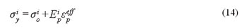

|
Elastik-Plastik Hidrodinamik
Elastik-plastik
hidrodinamik malzeme modeli kopmaya maruz kalacak kadar yüksek
deðerlerde birim þekil deðiþtirmeye uðrayan malzemeler için
kullanýlabilir. Eðer etkili gerçek gerilme ve birim þekil
deðiþtirme verileri belirlenmemiþse, izotropik pekleþme kabulü
yapýlarak σy ve Etan deðerleri akma mukavemetini belirlemek
için kullanýlabilir, plastik pekleþme modülü Eh, E ve Etan
cinsinden belirlenebilir.
Ayrýca gerilme birim þekil deðiþtirme davranýþý 16 veri noktasýna
kadar tanýmlanabilir. Bu durum için bir lineer polinom denklemi
tanýmlanmalýdýr.
5.2.2.
Birim þekil deðiþtirme oranýna baðýmlý plastisite
Ýzotropik
malzemelerde beþ farklý çeþit birim þekil deðiþtirme oranýna
baðýmlý plastisite modeli mevcuttur.
5.2.2.1. Plastik Kinematik:
Bilineer
plastik pekleþmeyi σy ve Etan kontrol eder. Plastik kinematik
modelde ise pekleþme parametresi β vardýr. β, 0
(kinematik) ile 1 (izotropik) arasýndadýr (Þekil 2). Malzeme
tanýtýlýrken kopma birim þekil deðiþtirmesi deðeri girilebilir.
Bu parametre sayesinde hesap esnasýnda bu deðeri aþan elemanlar
hesaplamadan çýkarýlacaktýr. Yýrtýlma ve kopma simule edilebilecektir.
Bu
malzeme modeli þekillendirme analizlerde dahil olmak üzere
birçok simülasyonda oldukça hýzlý çalýþtýðýndan, ön analizleri
bu malzeme modeli ile yapmak tavsiye edilebilir.
Plastik
kinematik malzeme tanýmýnda akma fonksiyonu þu þekilde ifade
edilebilir:
Burada
σo iç akma gerilmesi, εpeff etken plastik birim
þekil deðiþtirme ve Ep ise plastik pekleþme modülüdür, ve
þu þekilde ifade edilebilir:
Þekil
2 - Plastik kinematik pekleþme
5.2.2.2.
Birim þekil deðiþtirme oranýna duyarlý:
Bu
model bilineer izotropik pekleþmenin plastik davranýþýdýr.
Power law (üs kanunu) pekleþmesi; mukavemet katsayýsý k ve
pekleþme katsayýsý n ile ifade edilir.
Bu model için akma fonksiyonu þu þekilde ifade edilebilir;
Burada εe elastik birim þekil deðiþtirmedir.
5.2.2.3.
Piecewise Lineer:
Bu
modelde gerilme ve birim þekil deðiþtirme iliþkisi; etken
gerilme ve etken birim þekil deðiþtirme eðrisi olarak ifade
edilir. Bu modelde de hangi elemanlarýn iþlemden çýkarýlacaðýnýn
tespiti için kopma birim þekil deðiþtirme deðeri tanýmlanmaktadýr.
Bu
model çözümde çok etkili ve Crash simülasyonlarýnda en çok
tercih edilen malzeme modelidir. Akma gerilmesi Cowper-Symonds
modelinden birim þekil deðiþtirme oraný ile orantýlanarak
elde edilir.
5.2.2.4. Birim þekil deðiþtirme oranýna baðlý:
En
genel kullanýlan birim þekil deðiþtirme oraný içeren plastik
modelidir. σy, E, Etan, ve σkopma tamamen birim
þekil deðiþtirme oranýna baðlýdýr. Herhangi bir birim þekil
deðiþtirme oranýnda akma gerilmesi þu þekilde ifade edilebilir:

Bu ifadedeki deðiþkenler dört eðri ile kontrol edilir; bu
eðrilerden eðri 1 , σy 'yi 'in bir fonksiyonu olarak
ifade eder. Eðri 2 , E 'yi 'in bir fonksiyonu olarak ifade
eder. Eðri 3 , Etan 'ý 'in bir fonksiyonu olarak ifade eder.
Eðri 4, etken von Mises gerilmesini kopma anýnda 'in bir fonksiyonu
olarak ifade eder.
5.2.2.5. Power Law:
Birim
þekil deðiþtirme oranýna duyarlý Power law plastisite modeli
özellikle süper plastik þekil verme analizlerinde kullanýlýr.
Ramburgh-Osgood
kurallarý gereði akma gerilmesi ifadesi:
burada k malzeme katsayýsý, m pekleþme katsayýsý, n birim
þekil deðiþtirme oraný parametresi, ve birim þekil deðiþtirme
oranýdýr.
Bu
çalýþmada þekillenecek sac parçasý dýþýndaki tüm parçalar
rijit olarak ele alýnmýþ, þekillenecek sacýn plastik davranýþý
için birim þekil deðiþtirme oranýna baðlý piecewise lineer
yaklaþýmý kullanýlmýþtýr. Bu modelin seçilmesinin nedeni,
soðuk þekil deðiþimleri için ideal bir malzeme modeli olmasýdýr
(Kýrlý, 2003).
5.2.3. Malzeme Modeli Tanýmlanýrken Dikkat Edilmesi Gereken
Hususlar
·
Her malzeme modeli tüm eleman tipleri için geçerli olmayabilir.
Bazý malzemeler katý elemanlar için uygulanabilir, bazýlarý
ise yalnýzca iki boyutlu að yapýlarýna uygulanabilir.
· Her malzeme modeli için tüm sabitlerin girilmesi gerekmeyebilir.
Örneðin kopma birim þekil deðiþtirmesi deðeri birim þekil
deðiþtirme oraný içermeyen bir malzeme modelinde girilmeyebilir.
· Malzeme özellikleri tanýmlanýrken doðru birim sistemi kullanýlmasýna
dikkat edilmelidir. Yanlýþ birimler, yalnýz malzeme davranýþýný
etkilemez, ayrýca temas katýlýðýný da deðiþtirir.
· Doðru ve tutarlý malzeme verileri girmenin önemi atlanmamalýdýr.
Doðru malzeme verileri için zaman ve para harcamaktan kaçýnýlmamalýdýr.
6. Temas Tanýmlarý Ve Çeþitleri
ANSYS/LS-DYNA
yazýlýmýnda temas tanýmý; Ýmpilisit ANSYS ve benzer programlardan
farklýdýr. Temas elemanlarý kullanýlmaz yerine temas yüzeyleri
kullanýlýr. Modellerin bir parçasýnýn dýþ yüzeyinin diðer
bir parçanýn içine girmesi temasý doðurur. Temas elemanlarý
kullanýlmadýðý için temas edecek bölgeleri önceden tanýmlamak
gerekmez. Eleman aðýnýn özelliklerinde temas katýlýðý tanýmlamak
gerekmez. Temas tanýmý için birbiri ile temas edecek parçalarý
tanýtmak, temas tipini belirlemek ve temas tipi ile ilgili
istenen parametreleri girmek yeterlidir.
ANSYS yazýlýmýnda 22 Farklý temas tipi mevcuttur. Bu da yüzeyler
arasý çok geniþ etkileþim imkaný saðlar. Hangi temas tipinin
fiziki modeli en iyi yansýtacaðýna karar vermek zordur. Temas
tipinin seçimini yapabilmek için deðiþik temas algoritmalarýný
ve mevcut temas ailelerinin içeriðini bilmek gereklidir. Bu
çalýþmada, birçok temas tanýmý denenmiþ ve en baþarýlý sonuç
þekillendirme temasýnda elde edilmiþtir. Çalýþmanýn devamýnda
yapýlan analiz örnekleri, þekillendirme temasý ile gerçekleþtirilmiþtir.
Þekillendirme temas tipleri; düðüm noktasý ile yüzey þekillendirme
temasý, yüzey ile yüzey þekillendirme temasý ve tek yönlü
yüzey ile yüzey þekillendirme temasý þeklindedir ve metal
þekillendirme uygulamalarýnda kullanýlmaktadýr. Bu temas tipinde
kalýplar ve yardýmcý elemanlar hedef yüzey olarak tanýmlanýr,
iþ parçasý olan sac ise temas yüzeyi olarak tanýmlanýr. Að
yapýsýnýn sürekliliði ve kendi içinde bütünlüðü bu temas tipi
için zorunlu deðildir, böylece temas özellikleri sistemin
karmaþýklýðýný azaltmaktadýr. Kalýp elemanlarýný yüzey normalleri
ayný doðrultuda olmalýdýr. Þekillendirme temasýnýn ayarlarý
otomatik temas tiplerine dayandýðýndan oldukça saðlýklý sonuçlar
elde edilir.
|